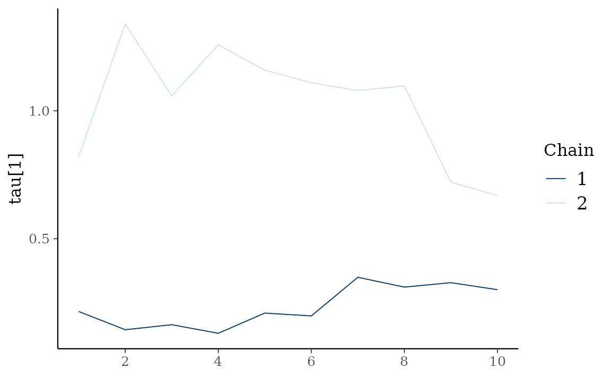

var_idx <- c("GVZCLS", "OVXCLS", "EVZCLS", "VXFXICLS")
etf <-
etf_vix[1:100, ] %>%
dplyr::select(dplyr::all_of(var_idx))
# Split-------------------------------
h <- 5
etf_eval <- divide_ts(etf, h)
etf_train <- etf_eval$train
etf_test <- etf_eval$testStochastic Search Variable Selection (SSVS) Prior
-
y: Multivariate time series data. It should be data frame or matrix, which means that every column is numeric. Each column indicates variable, i.e. it sould be wide format. -
har: Order of VHAR -
num_iter: Total number of iterations -
num_burn: Number of burn-in -
thinning: Thinning -
bayes_spec: Output ofset_ssvs()- By default, use a default semi-automatic approach using
choose_ssvs().
- By default, use a default semi-automatic approach using
-
init_spec: Gibbs sampler initialization byinit_ssvs().- By default,
init_ssvs(type = "auto")uses OLS.
- By default,
-
include_mean = TRUE: By default, you include the constant term in the model. -
minnesota = c("no", "short", "longrun"): Minnesota-type shrinkage. -
verbose = FALSE: Progress bar
(fit_ssvs <- bvhar_ssvs(etf_train, num_iter = 50, include_mean = FALSE, minnesota = "longrun"))
#> Call:
#> bvhar_ssvs(y = etf_train, num_iter = 50, include_mean = FALSE,
#> minnesota = "longrun")
#>
#> BVHAR with SSVS Prior
#> Fitted by Gibbs sampling
#> Total number of iteration: 50
#> Number of burn-in: 25
#> ====================================================
#>
#> Parameter Record:
#> # A draws_df: 25 iterations, 1 chains, and 112 variables
#> phi[1] phi[2] phi[3] phi[4] phi[5] phi[6] phi[7] phi[8]
#> 1 0.698 -0.00226 -0.0123 0.037430 0.02887 0.03234 0.04147 0.00751
#> 2 0.873 0.02821 0.0360 0.010323 0.04918 0.01284 0.03641 0.00163
#> 3 0.763 0.01056 -0.0212 -0.000826 -0.02758 0.01102 0.05360 0.04717
#> 4 0.889 0.00357 -0.0204 0.034986 -0.00416 -0.02446 -0.03122 0.02264
#> 5 0.859 0.01599 0.0599 0.029510 0.01150 0.00536 0.00188 0.00865
#> 6 0.956 -0.01873 0.0263 0.003166 0.02746 0.05086 -0.00259 0.00709
#> 7 0.782 0.00567 0.0208 0.009171 0.01129 0.03717 -0.07532 0.00518
#> 8 0.817 0.03570 0.0362 0.003582 0.03489 -0.00423 0.03803 0.02531
#> 9 0.932 0.00745 -0.0411 0.010844 0.01799 0.01914 0.10273 0.01348
#> 10 0.740 0.04380 0.0326 0.016294 -0.01817 0.02164 0.02196 0.00779
#> # ... with 15 more draws, and 104 more variables
#> # ... hidden reserved variables {'.chain', '.iteration', '.draw'}autoplot() for the fit (bvharsp object)
provides coefficients heatmap. There is type argument, and
the default type = "coef" draws the heatmap.
autoplot(fit_ssvs)
type = "trace" gives MCMC trace plot.
autoplot(fit_ssvs, type = "trace", regex_pars = "psi")
Horseshoe Prior
(fit_hs <- bvhar_horseshoe(etf_train, num_iter = 50, include_mean = FALSE, minnesota = "longrun", verbose = TRUE))
#>
# 2%
## 4%
### 6%
#### 8%
##### 10%
###### 12%
####### 14%
######## 16%
######### 18%
########## 20%
########### 22%
############ 24%
############# 26%
############## 28%
############### 30%
################ 32%
################# 34%
################## 36%
################### 38%
#################### 40%
##################### 42%
###################### 44%
####################### 46%
######################## 48%
######################### 50%
########################## 52%
########################### 54%
############################ 56%
############################# 58%
############################## 60%
############################### 62%
################################ 64%
################################# 66%
################################## 68%
################################### 70%
#################################### 72%
##################################### 74%
###################################### 76%
####################################### 78%
######################################## 80%
######################################### 82%
########################################## 84%
########################################### 86%
############################################ 88%
############################################# 90%
############################################## 92%
############################################### 94%
################################################ 96%
################################################# 98%
################################################## 100%
#> Call:
#> bvhar_horseshoe(y = etf_train, num_iter = 50, include_mean = FALSE,
#> minnesota = "longrun", verbose = TRUE)
#>
#> BVHAR with Horseshoe Prior
#> Fitted by blocked sampling
#> Total number of iteration: 50
#> Number of burn-in: 25
#> ====================================================
#>
#> # A draws_df: 25 iterations, 1 chains, and 103 variables
#> phi[1] phi[2] phi[3] phi[4] phi[5] phi[6] phi[7] phi[8]
#> 1 0.541 0.117 0.1022 0.0879 0.164 -0.0480 0.0431 -0.01197
#> 2 0.543 0.119 0.0983 0.0885 0.158 -0.0497 0.0587 -0.01417
#> 3 0.543 0.118 0.0992 0.0867 0.160 -0.0485 0.0502 -0.01051
#> 4 0.542 0.119 0.1020 0.0875 0.160 -0.0483 0.0427 -0.01106
#> 5 0.542 0.117 0.1058 0.0858 0.163 -0.0479 0.0427 -0.00992
#> 6 0.544 0.116 0.0949 0.0916 0.158 -0.0462 0.0488 -0.01830
#> 7 0.541 0.119 0.0966 0.0875 0.164 -0.0489 0.0497 -0.01049
#> 8 0.542 0.116 0.1020 0.0894 0.159 -0.0454 0.0485 -0.01446
#> 9 0.542 0.118 0.0954 0.0903 0.157 -0.0475 0.0556 -0.01525
#> 10 0.541 0.118 0.1012 0.0889 0.159 -0.0496 0.0491 -0.01307
#> # ... with 15 more draws, and 95 more variables
#> # ... hidden reserved variables {'.chain', '.iteration', '.draw'}
autoplot(fit_hs)
type = "dens" draws MCMC density plot.
autoplot(fit_hs, type = "dens", regex_pars = "tau")
Models with Stochastic Volatilities
SSVS
(fit_ssvs_sv <- bvhar_sv(etf_train, num_iter = 50, bayes_spec = set_ssvs(), include_mean = FALSE, minnesota = "longrun"))
#> Call:
#> bvhar_sv(y = etf_train, num_iter = 50, bayes_spec = set_ssvs(),
#> include_mean = FALSE, minnesota = "longrun")
#>
#> BVHAR with Stochastic Volatility
#> Fitted by Gibbs sampling
#> Total number of iteration: 50
#> Number of burn-in: 25
#> ====================================================
#>
#> Parameter Record:
#> # A draws_df: 25 iterations, 1 chains, and 354 variables
#> phi[1] phi[2] phi[3] phi[4] phi[5] phi[6] phi[7] phi[8]
#> 1 0.785 0.0793 -0.15126 0.2043 0.120 0.0907 -0.00864 -0.1397
#> 2 0.801 0.0824 0.04322 0.1067 0.125 0.0681 -0.06809 -0.0667
#> 3 0.770 0.0605 -0.00129 0.1077 0.125 0.0998 -0.11264 -0.0318
#> 4 0.739 0.0604 -0.03785 0.1134 0.176 0.0667 -0.08694 -0.0227
#> 5 0.789 0.0128 -0.01029 0.0443 0.174 0.1075 -0.02040 0.0418
#> 6 0.501 0.1494 -0.23357 0.3354 0.332 -0.0470 0.18223 -0.2315
#> 7 0.629 0.0438 -0.15867 0.2159 0.254 0.0901 0.15882 -0.0991
#> 8 0.522 0.1171 -0.26260 0.3145 0.361 -0.0327 0.12431 -0.2004
#> 9 0.493 0.1000 -0.29624 0.3133 0.271 -0.0120 0.21763 -0.0935
#> 10 0.461 0.1733 -0.42657 0.3467 0.108 -0.1280 0.30065 0.0165
#> # ... with 15 more draws, and 346 more variables
#> # ... hidden reserved variables {'.chain', '.iteration', '.draw'}
autoplot(fit_ssvs_sv)Horseshoe
(fit_hs_sv <- bvhar_sv(etf_train, num_iter = 50, bayes_spec = set_horseshoe(), include_mean = FALSE, minnesota = "longrun"))
#> Call:
#> bvhar_sv(y = etf_train, num_iter = 50, bayes_spec = set_horseshoe(),
#> include_mean = FALSE, minnesota = "longrun")
#>
#> BVHAR with Stochastic Volatility
#> Fitted by Gibbs sampling
#> Total number of iteration: 50
#> Number of burn-in: 25
#> ====================================================
#>
#> Parameter Record:
#> # A draws_df: 25 iterations, 1 chains, and 354 variables
#> phi[1] phi[2] phi[3] phi[4] phi[5] phi[6] phi[7] phi[8]
#> 1 0.433 0.0461 -6.93e-02 0.258 0.033938 0.0102 0.2708 0.00212
#> 2 0.431 0.0699 2.67e-02 0.263 -0.008923 0.0148 0.0480 0.04576
#> 3 0.490 0.0749 -2.72e-02 0.258 -0.060934 0.0119 0.1199 0.03617
#> 4 0.520 0.0476 1.77e-03 0.253 0.007058 0.0120 0.1069 0.04747
#> 5 0.516 0.0466 9.22e-05 0.214 -0.060572 0.0136 0.1859 0.12563
#> 6 0.527 0.0230 5.12e-02 0.219 -0.127866 0.0650 -0.0279 0.15157
#> 7 0.515 0.0455 1.52e-01 0.163 0.003174 -0.0635 0.2009 0.20966
#> 8 0.489 0.0640 1.70e-01 0.188 -0.050664 -0.0444 0.0661 0.17885
#> 9 0.498 0.0609 6.21e-02 0.232 -0.017296 -0.0285 0.2176 0.08531
#> 10 0.490 0.0705 2.49e-01 0.208 0.000344 -0.0650 0.0610 0.14936
#> # ... with 15 more draws, and 346 more variables
#> # ... hidden reserved variables {'.chain', '.iteration', '.draw'}
autoplot(fit_hs_sv)